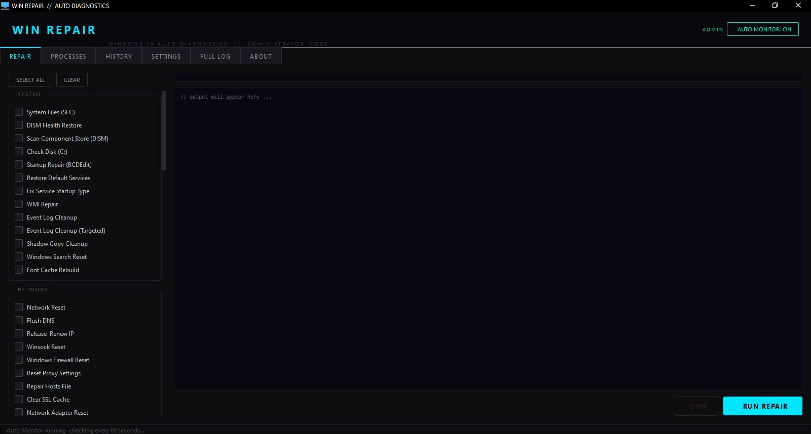

Fix common Windows problems from one dashboard
WinRepair runs common diagnostics and repairs using the built-in Windows tools you already have. An optional background monitor alerts you when something looks wrong.

The dashboard with repair tasks and Auto Monitor status. Click to view full size.
Everything in one place
Run repairs, watch your system, and review what happened, without switching between tools.
Repair tools
System, network, maintenance, security, drivers, performance, apps, cleanup, and advanced fixes using SFC, DISM, CHKDSK, and netsh.
Auto Monitor
Watches CPU, RAM, disk, network, services, and security settings in the background, and can send email alerts.
Auto-Heal
Applies fixes automatically with safeguards: cooldowns, a disable list, and a restore point before risky repairs.
Process Manager
Suspend idle apps and resume them automatically when you return to them.
History
Every detection and repair is logged, searchable, and exportable to CSV.
Safety first
WinRepair makes system-level changes. Back up important files before running repairs. Risky repairs create a restore point first, and destructive actions are off by default.
Windows SmartScreen may warn that the app is from an unknown publisher. This is normal for independent tools. Click More info, then Run anyway only if you downloaded the file from this page.
Get started in three steps
-
1
Download the .rar file using the button at the top of this page.
-
2
Extract it with WinRAR or 7-Zip.
-
3
Open the
AutoHealingSystemfolder and rundist\WinRepair.exeas Administrator.
What you need
- Windows 10 or Windows 11
- Administrator rights (most repairs require elevation)